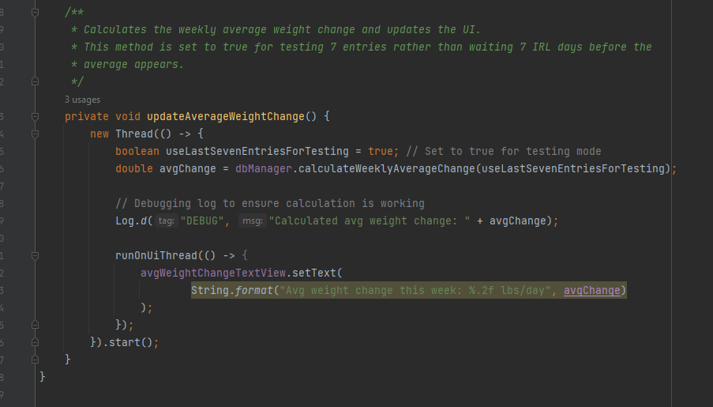

This enhancement improves the data processing and algorithmic functionality within the GravityGauge project. The key improvement was implementing an average weight change algorithm to track weight trends over time. Additionally, the user interface was updated to present this data in a more structured format.
The following function retrieves the last seven weight entries and calculates the average daily weight change over that period:
The function pulls all entries from the last seven days, then calculates the difference between each consecutive entry. The total change is divided by the number of days counted to provide a daily trend. This allows users to see if their weight is trending upward or downward.
A new testing mode was added, allowing developers to simulate a seven-day trend using the last seven entries instead of real-world time.
Before this enhancement, the application lacked a way to analyze long-term weight trends. The following changes were made:
public List getLast7DaysEntries() {
List weightEntries = new ArrayList<>();
SQLiteDatabase db = this.getReadableDatabase();
String query = "SELECT * FROM " + TABLE_WEIGHT_ENTRIES + " WHERE date >= date('now', '-7 days') ORDER BY date ASC";
Cursor cursor = db.rawQuery(query, null);
int dateIndex = cursor.getColumnIndex(KEY_DATE);
int weightIndex = cursor.getColumnIndex(KEY_WEIGHT);
if (dateIndex != -1 && weightIndex != -1) {
if (cursor.moveToFirst()) {
do {
WeightEntry entry = new WeightEntry();
entry.setDate(cursor.getString(dateIndex));
entry.setWeight(cursor.getDouble(weightIndex));
weightEntries.add(entry);
} while (cursor.moveToNext());
}
} else {
Log.e("DatabaseManager", "Error: Column indices are invalid.");
}
cursor.close();
db.close();
return weightEntries;
}
public double calculateWeeklyAverageChange(boolean useLastSevenEntries) {
List entries = getLast7DaysEntries();
if (entries.size() < 2) return 0; // Not enough data to calculate change
double totalChange = 0;
int daysCounted = 0;
for (int i = 1; i < entries.size(); i++) {
totalChange += entries.get(i).getWeight() - entries.get(i - 1).getWeight();
daysCounted++;
}
return (daysCounted > 0) ? totalChange / daysCounted : 0;
}
A new TextView was added to `activity_weight_data.xml` to display the weekly average weight change. The calculated trend updates dynamically whenever a new weight entry is added.
private void updateWeightTrend() {
double avgChange = dbManager.calculateWeeklyAverageChange(false);
avgWeightChangeTextView.setText("Avg Daily Change: " + avgChange + " lbs");
}
These improvements resulted in:
By adding an algorithm to calculate average weight change, introducing a testing mode, and improving UI responsiveness, the GravityGauge app now provides a clearer picture of weight trends. These enhancements improved both algorithmic efficiency and user experience.